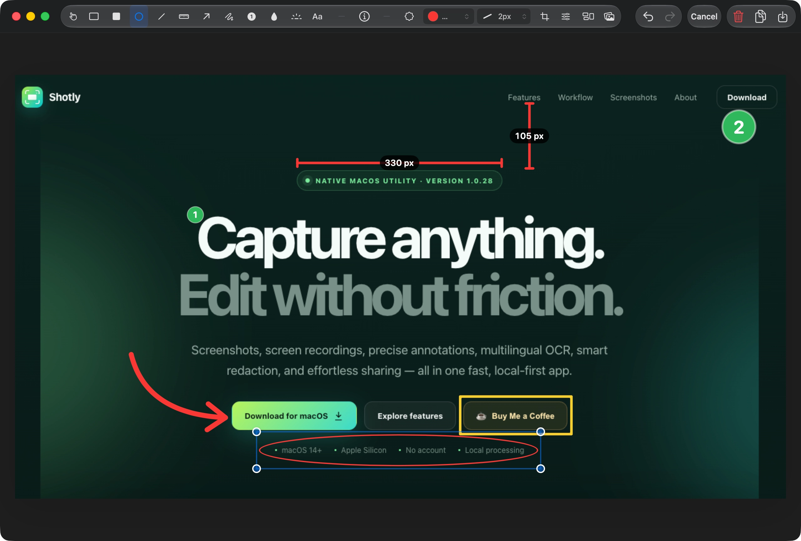

Reliable window capture
Version 1.0.32 makes window selection responsive and reliable on the latest macOS, with a frozen multi-display preview and clear selectable targets.
Capture anything. Edit without friction.
Screenshots, screen recordings, precise annotations, multilingual OCR, smart redaction, and effortless sharing — all in one fast, local-first app.

Built for daily work
Shotly keeps the entire screenshot workflow in one native app, so every action stays quick, predictable, and close to the keyboard.
Version 1.0.32 makes window selection responsive and reliable on the latest macOS, with a frozen multi-display preview and clear selectable targets.
Extract multilingual text with Apple Vision, detect the source language automatically, and translate it on device with Apple Translation.
Draw horizontal or vertical measurement annotations with automatic axis locking and clear pixel labels.
Keep multiple previews visible, then combine captures vertically, horizontally, or in a clean 2×2 grid.
Hide sensitive regions using smooth blur or pixelated mosaic, each with an adjustable density control.
Use OCR to detect email addresses, phone numbers, and payment details, then redact them before sharing.
Capture workflow
Every capture appears in a compact quick preview. Copy, save, edit, pin, delete, or keep capturing. Multiple previews line up instead of hiding one another, ready to become a collage.
Quick Preview screenshot
public/screenshots/quick-preview.webpEditor & annotations
A compact toolbar keeps the canvas spacious while contextual controls appear only when needed. Every annotation remains selectable, movable, resizable, and removable until export.
Editor screenshot
public/screenshots/editor.webpOCR, translation & privacy
Shotly copies recognized text to the clipboard immediately, detects its source language, then shows the original and translated result side by side. Change the target language at any time and copy the translation with one click. Smart Blur can also cover common personal information before an image is shared.
OCR Translation & Smart Blur screenshot
public/screenshots/ocr-smart-blur.webpScreen recording
Capture smooth MP4 recordings with a floating control pill that stays out of the video. Trim, crop, add a background, and export from Shotly’s dedicated video editor.
More thoughtful details
Save text or image watermarks with position, scale, opacity, and rotation.
Browse screenshots and recordings separately, then reopen or delete them.
Add capture details to the canvas with configurable color and font size.
Sample any pixel on screen and copy its exact hexadecimal value.
A guided first run checks permissions, shortcuts, and possible macOS conflicts.
Choose Light, Dark, or follow the current macOS appearance automatically.
Product gallery
About Shotly
Shotly is developed and maintained by Anh Nguyễn. It is based on Better Shot, the open-source project originally created by Kartik Labhshetwar, and expanded with a redesigned workflow and new tools.
Shotly 1.0.32
Download the latest Apple Silicon build with improved Window Capture and smoother hotkey response on the latest macOS.
Frequently asked questions
Yes. Shotly is free to download and use, with no account required.
Yes. Screenshot capture, OCR, annotation, collage building, and editing run locally on your Mac. OCR translation uses Apple’s on-device Translation framework.
Shotly recognizes English, Vietnamese, Japanese, Korean, Simplified Chinese, and Traditional Chinese. Translation targets also include French, German, and Spanish.
Shotly requires macOS 14 or later on Apple Silicon. OCR translation requires macOS 15 or later.
Yes. Shotly records MP4 video with cursor and audio options, pause and resume controls, timeline trimming, and video export.
No. Shotly does not upload screenshots, OCR text, filenames, or clipboard contents. Optional anonymous feature analytics can be disabled in Settings.